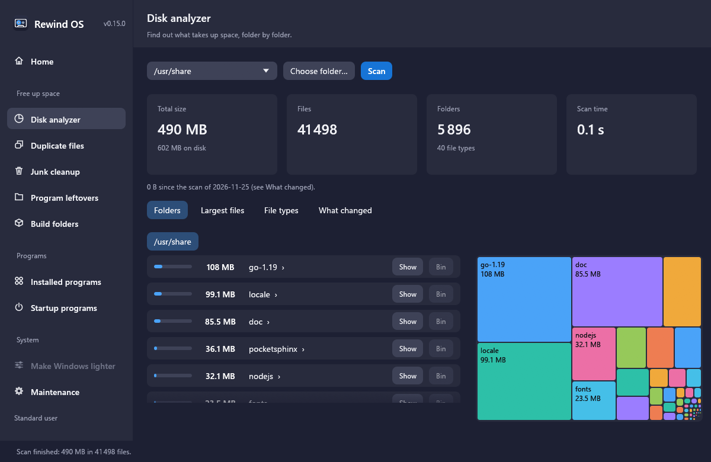

Disk analyzer
Find out what takes up space, folder by folder
A parallel scan of any drive or folder, shown as a sorted list, a treemap, the largest files and the size per file type. Show anything in the file manager or move it to the recycle bin.
- Hard links counted once, so system folders show their real size
- Never follows symbolic links or junctions
- Duplicate files by content, with one copy always kept
- Large files nobody changed in over a year, without the ones programs need
